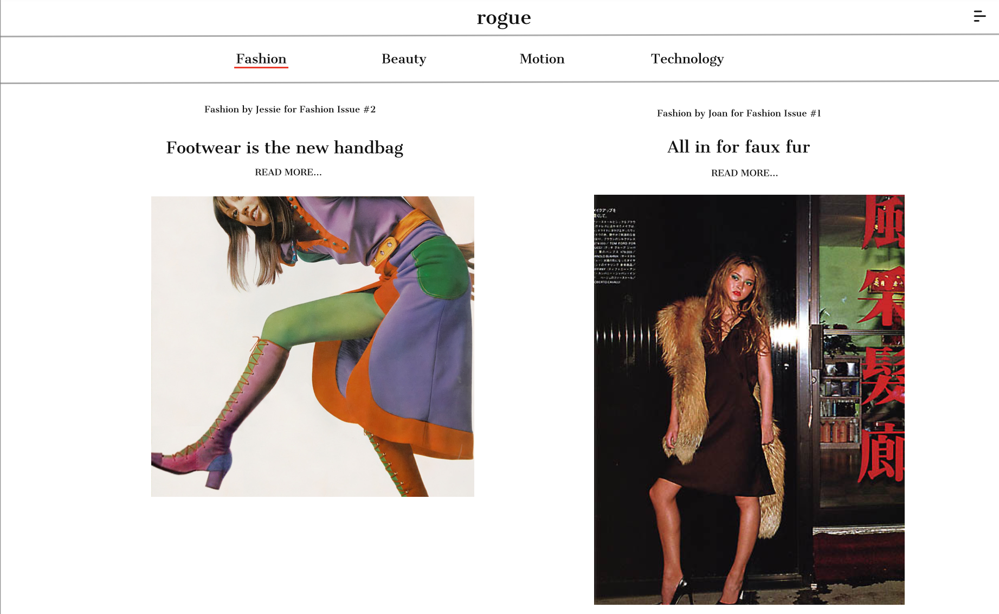
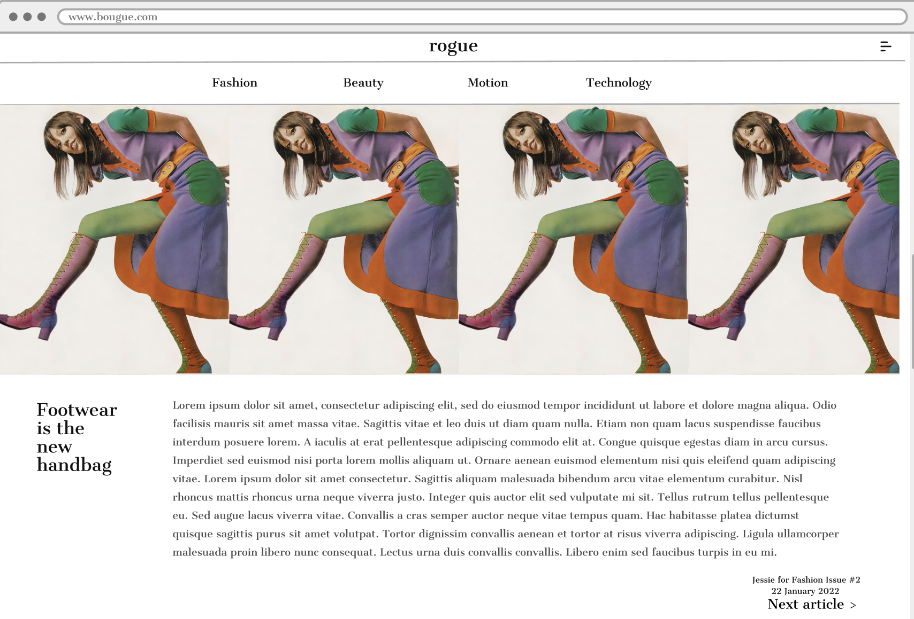
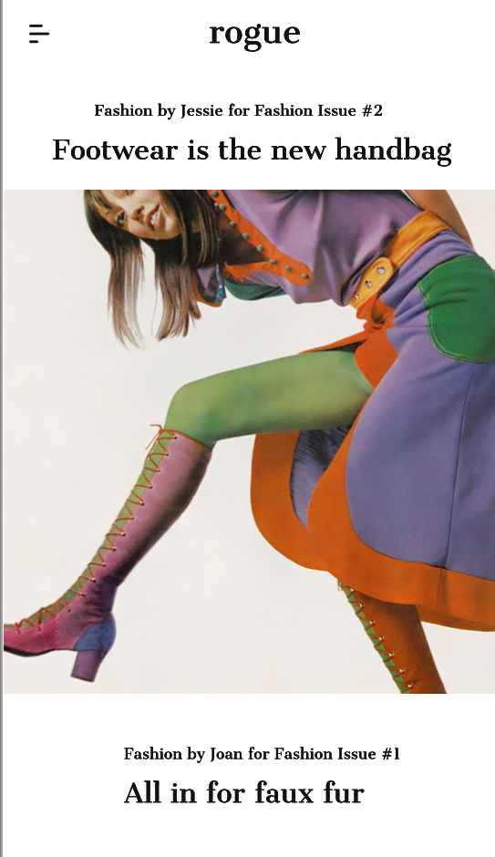
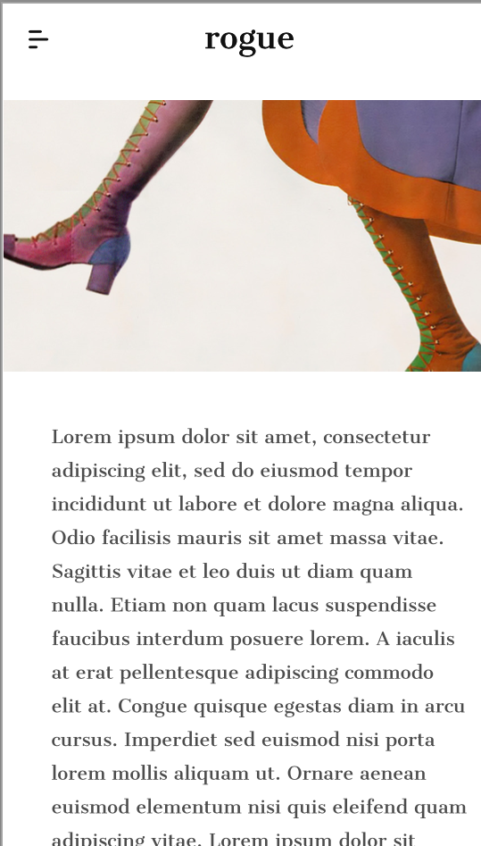
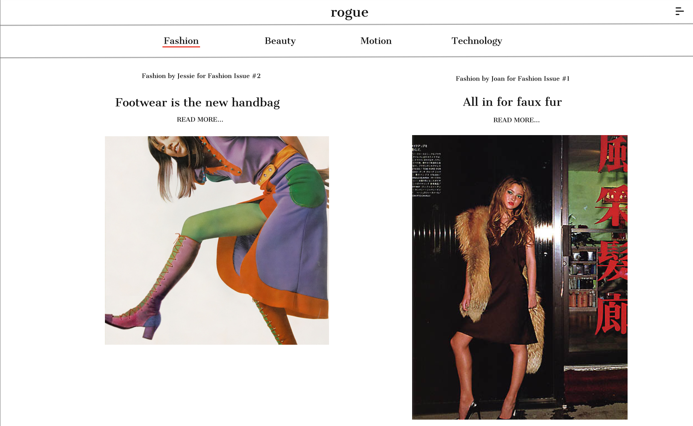
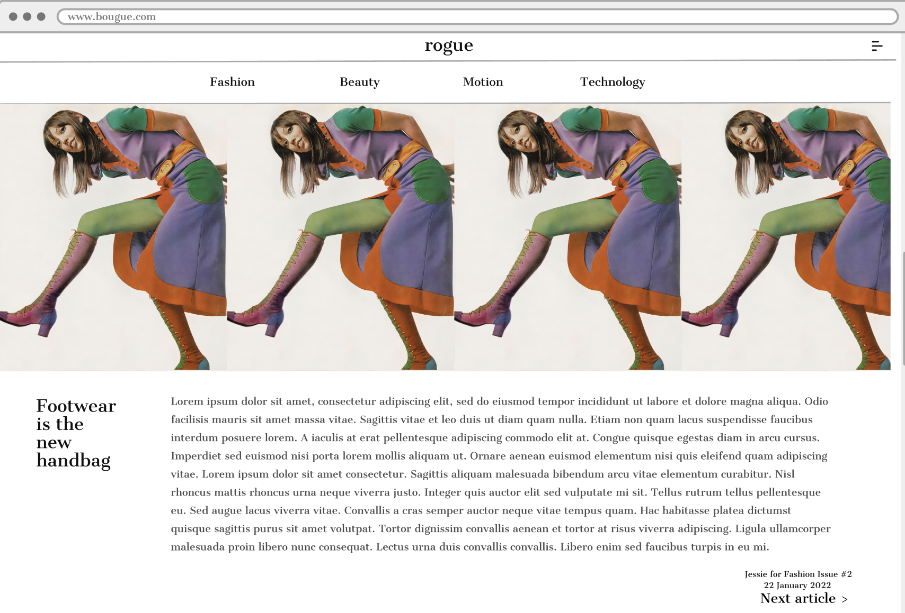
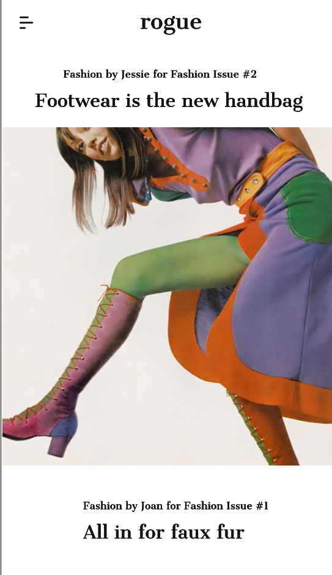
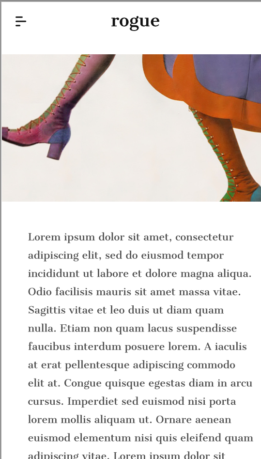
This magazine is heavily inspired by my own interests and hobbies. It is mainly a fashion magazine but my interest for fashion expands into many subcategories of it. The creative direction behind fashion campaigns and films is the most exciting for me thus I included categories such as ‘Motion’.
The structure of the magazine follows a homepage, 4 different categories of articles, contact page and a join us page. There are 2 articles in each category.
My design and structure of the webpage is largely influenced by big fashion companies such as Vogue and Harpers’ Bazaar. Vogue has a simple design with the use of minimal colors of white, black and red. The structure is also straightforward with each category at the top middle of the page.
The simple design is accompanied with bright and contrasting pictures that complement the white background. I tried to follow that in my choice of colors for my magazine.
The minimal design makes the webpage clear to see for people with visual impairments. The font color of links changes to a bright red when it is hovered over which aids in navigating the webpage. For example, the navigation items and ‘Read More’ button hovers to a red color and the header ‘rogue’ hovers pink which directs back to the homepage. These are indicators that make navigating the webpage more straightforward. Images and fonts are large and visible and the large amount of white space makes the visual elements stand out. The footer is also fixed to the bottom of the screen so they can navigate to other pages such as ‘Contact Us’ and ‘Join us’ without clicking to the side navigation bar. Under the ‘Motion’ navigation has video contents that are features that everyone can enjoy including those with impaired hearing with subtitles available.
Usability of my webpage can be seen through the compatibility to different screen sizes, little number of elements on each page and clear functions to navigate easily. Adopting a flexbox and grid layouts allowed me to make the page more responsive to different screen sizes. There are little words and descriptions which do not make the page look crowded and messy thus easy to read and skim through.
Additionally, with only 4 elements on the navigation bar and a small nav-pop up to the top left makes it easy to navigate as they are made very visible and clearly on each page. As the user clicks on a category, they are directed to a list of articles to read and will be directed to an article when they click the ‘Read More’ button. The webpage is usable also through examples like the ‘Next/Previous article’ where the user can navigate to the next article without going back to the list of articles.
It was difficult to ensure a consistent layout as more elements were added to the page.
Despite creating a mock-up it was difficult to ensure that the elements were working together. For example, there are many different layouts for each group of texts in an article and some do not align with the images thus using grid layouts helped me achieve that. In addition, creating a slider image was difficult without searching up how to do it. With the use of w3.schools I managed to understand the logic behind a slider photo. The use of ‘setInterval()’ helped me execute that.
An aspect that worked well was the ideation and preparation before writing my codes. I managed to create an almost exact copy of my mock-up. Ensuring that the mock-up is realistic and simple is important to be able to execute the project thus I managed to follow through for the layout and the design of each page.
However, the organization of my code can be improved greatly. For example, I could organise the article pages into a folder so it can be easily referred to and make changes easily. Additionally, I can organize my css code by adding more comments for example, in creating sub comments such as '/*Article Layouts*/' in '/*Articles*/' so that my codes can be easily referred to.
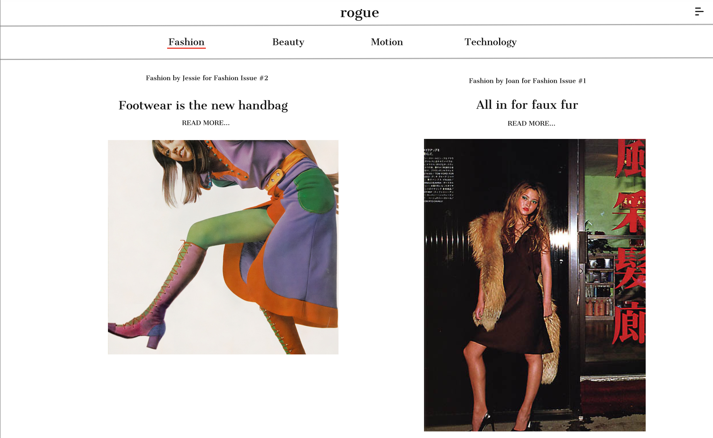
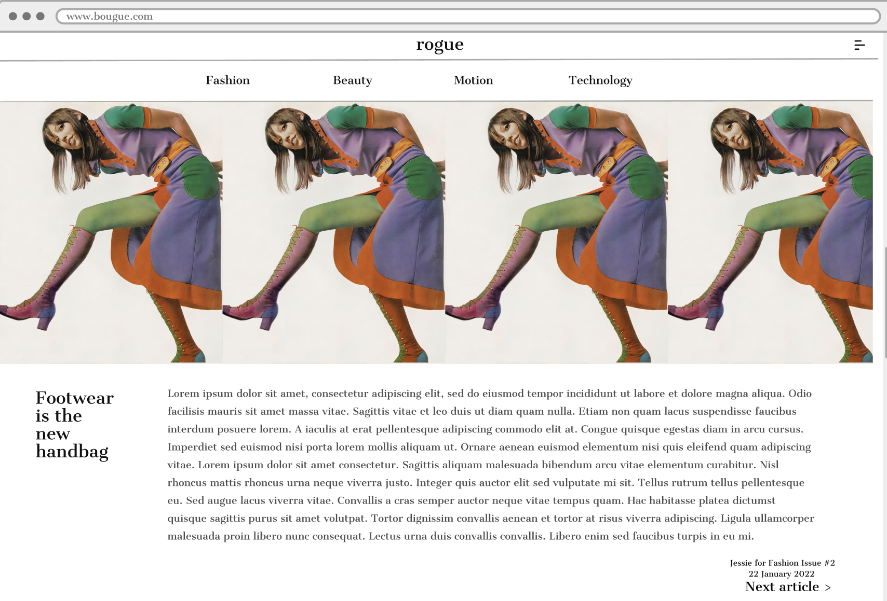
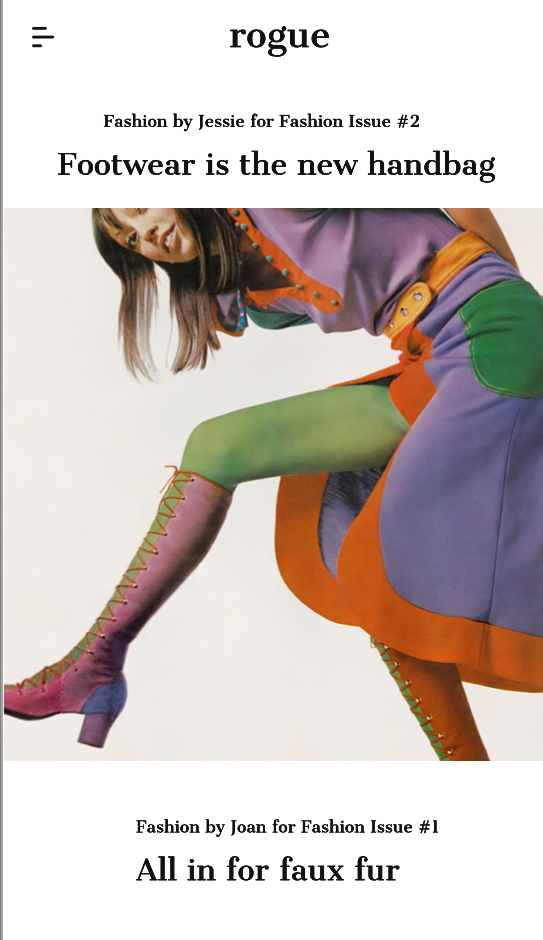
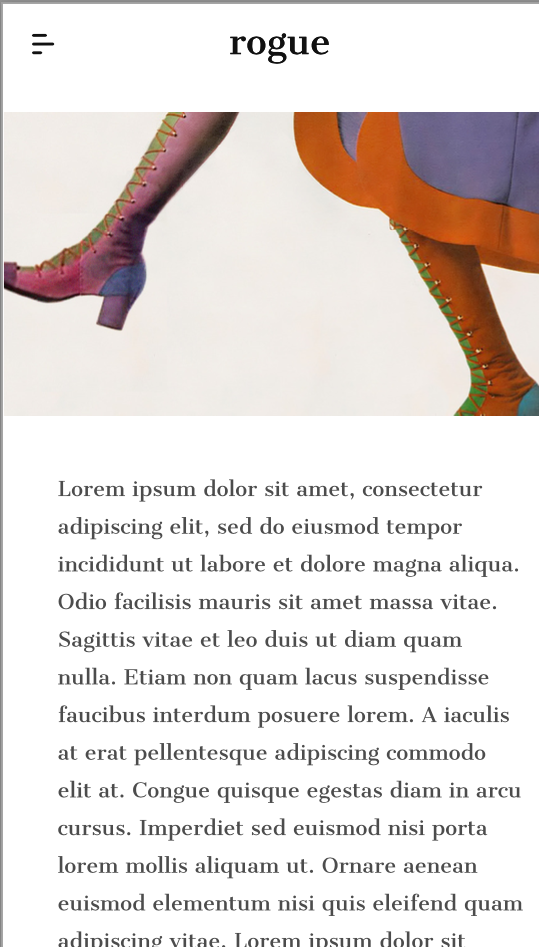
Reference:
[1]W3schoools.com, 'Slideshow Reference', 2022 [Online]
Source:
https://www.w3schools.com/howto/howto_js_slideshow.asp